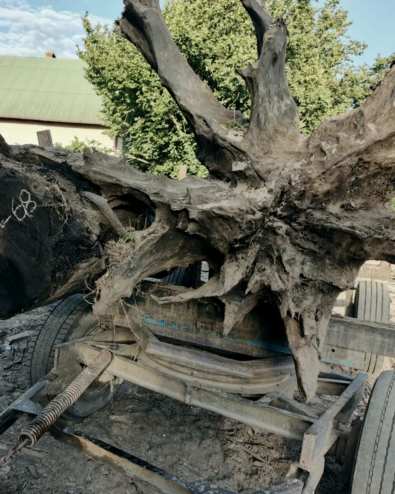
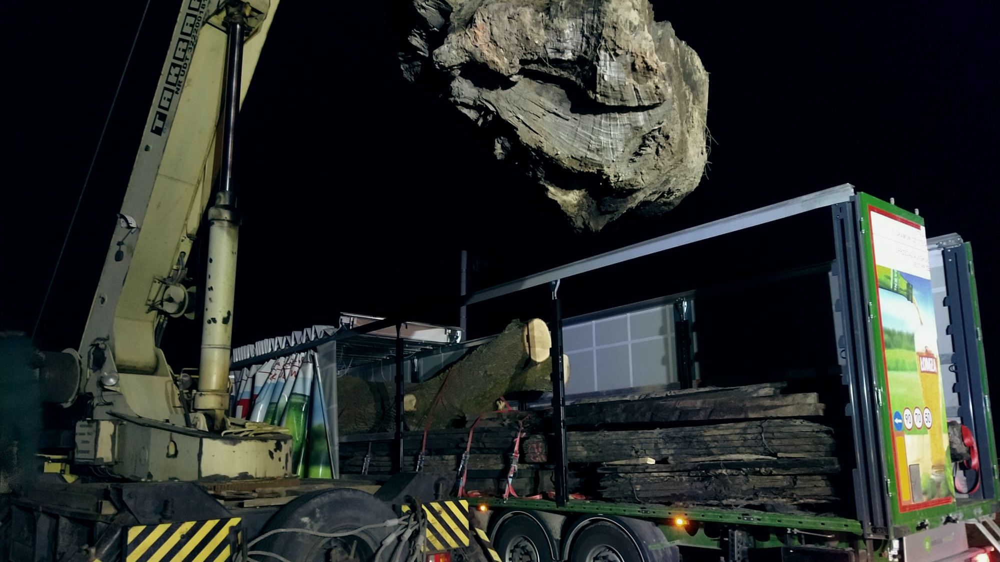
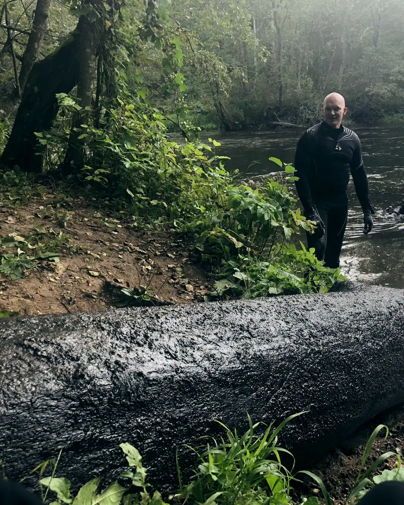
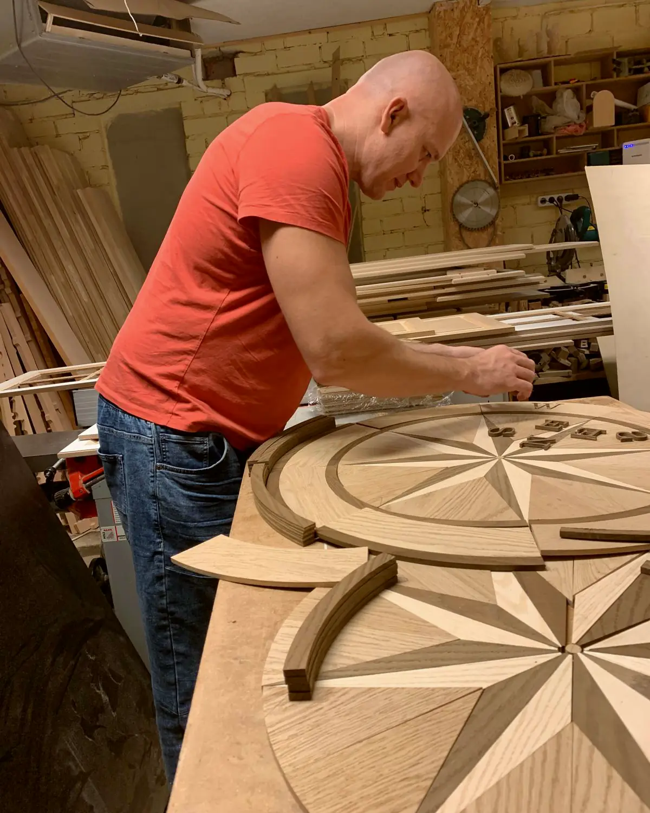
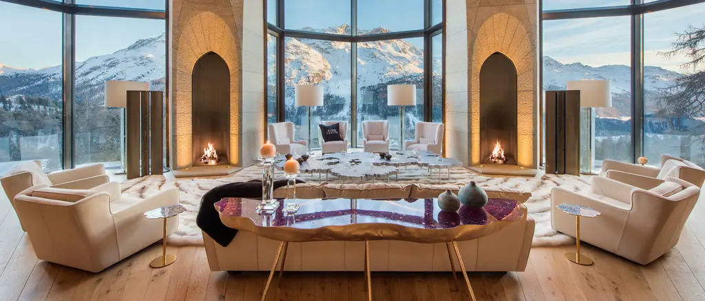
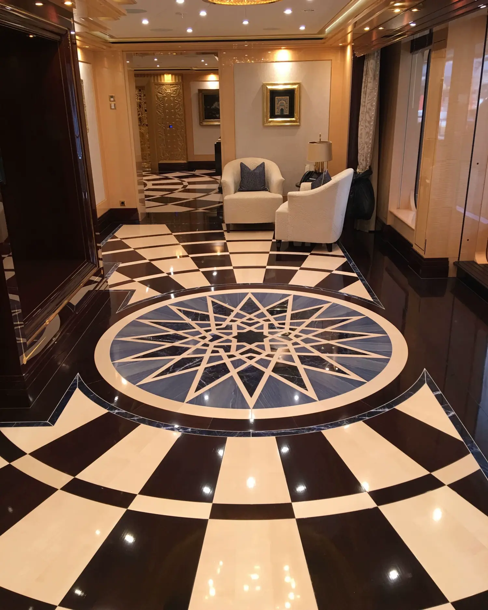
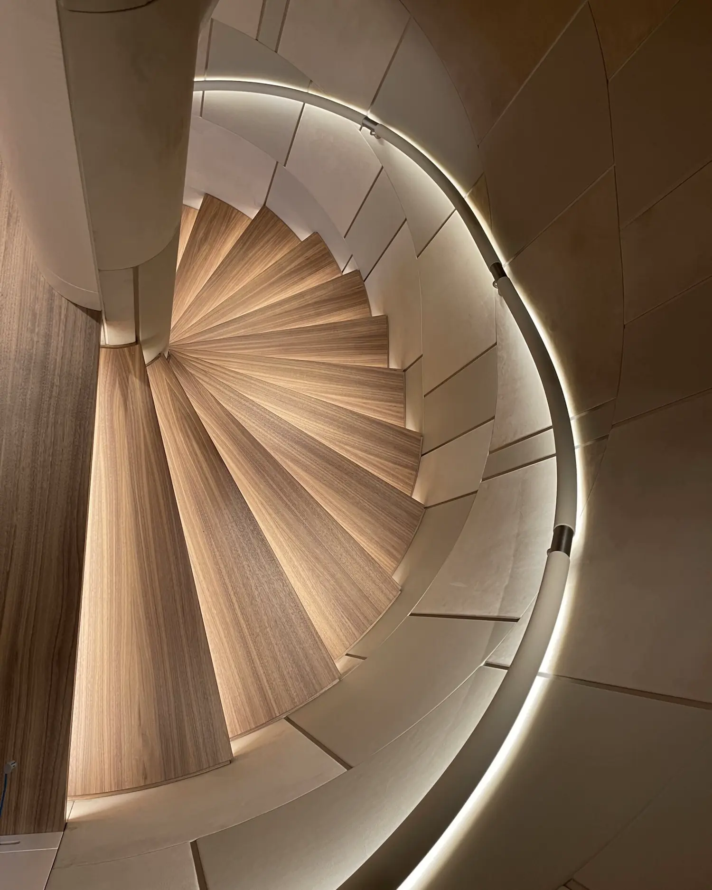

Fallen
An oak falls into a lake and sinks into the silt. Without oxygen it does not rot. Over centuries, tannins in the wood react with minerals in the water and the timber slowly turns from gold to deep brown and black.

These trees were never cut down. They fell into lakes and bogs long ago, and the water kept them. Our divers bring them back, and our workshop in Lithuania turns them into floors and interiors.
Bog trees were never cut down, which makes this the most sustainable and rare wood collection we know. Every trunk is located by hand, lifted, dated and slowly dried before a single board is made. Below is that journey, step by step.

An oak falls into a lake and sinks into the silt. Without oxygen it does not rot. Over centuries, tannins in the wood react with minerals in the water and the timber slowly turns from gold to deep brown and black.

For more than twenty years our team has dived the deepest lakes, cleaning them and searching for fallen trunks. Each piece is chosen by hand for its beauty and character.
The trunk is raised, still heavy with water, and sees the sky again.

A sample from the trunk is sent for carbon dating. The result tells us when the tree was alive, and it is the age you will be standing on.


Only when the trunk is opened do we see its colour. No two logs are alike: some are honey-brown, some nearly black. The water decided, not us.

Wood that has lived under water comes out saturated. It is dried slowly and under control, because rushing this step cracks it. Patience is part of the craft.


In our workshop artisans design, stain, pattern and finish every board. Bog oak is made into multilayer boards that stay stable with changes in temperature and humidity and work with underfloor heating.
Our own craftsmen can fly in to any destination in the world to install the wood, from a private residence to a yacht. The team that made it is the team that lays it.

“Finally, the floor is fantastic, thank you very much.”
Bog oak resists discolouring from sunlight and wear from daily use.
Multilayer boards do not swell with changes in temperature or humidity.
Compatible with underfloor heating systems.
Bog oak and bog ash are our signature. Alongside them we work with oak, elm, ash and black walnut.

The signature. Famous for its wide natural colour palette and intricate grain.

Rich, deep colours and intricate, unique grain patterns.
From the forest


Floors are where we started. Today the same wood becomes stairs, walls, ceilings, tables, wine cellars and yacht floors, made to measure for each project.




A selection of interiors where our wood now lives, from private residences to commercial spaces. Residences in Norway, Switzerland, France, Germany, Cyprus and the USA, and yachts. We respect our clients’ privacy, so we do not always share the name or photos of a project.


We craft our wood in Lithuania. The craft has passed through three generations of our family, and bog wood asks for all of it.
We advise on care and maintenance so the wood keeps its beauty for decades.
If something is damaged, or you want a new finish, our artisans come back to restore it.
Every project starts with a conversation. Tell us what you are planning and we will come back to you with samples and next steps.
Your request is in. We will be in touch shortly. (Prototype: nothing was sent.)